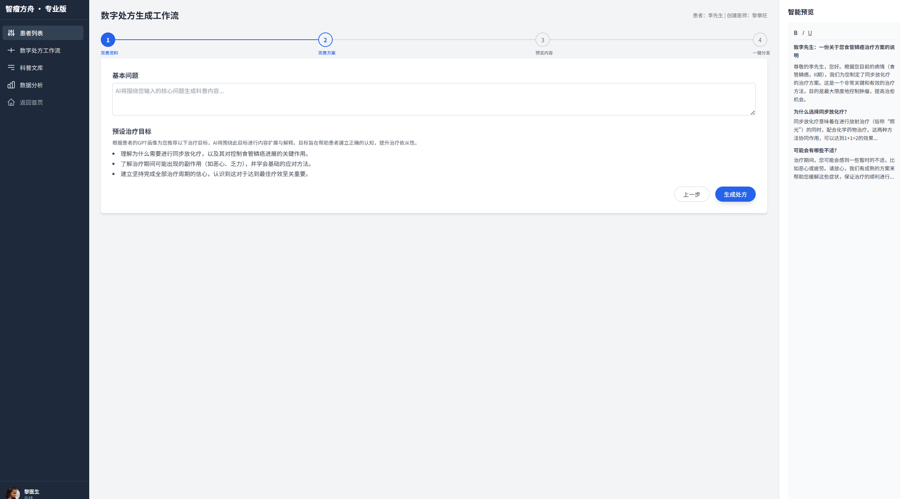

AI-Powered, Human-Centric
We pioneered the "Dual-Engine" mechanism: connecting Generative AI with Clinical Authority. This closed-loop system revolutionizes how oncology knowledge is created, verified, and delivered.
The "Dual-Engine" Strategy
🚀 Engine 1: AI Efficiency
MediArk leverages LLMs (Large Language Models) to liberate doctors from tedious writing tasks. By inputting key clinical points, our AI instantly generates patient-friendly scripts, translating complex jargon into plain language.
🛡️ Engine 2: Authoritative Assurance
Accuracy is non-negotiable. Every piece of AI-generated content undergoes a rigorous "Doctor-in-the-Loop" verification process by experts from Peking University Cancer Hospital, ensuring scientific rigor and empathy.

MediArk Core Workflow
1. AI Generation
Rapid generation of personalized scripts and drafts based on patient personas and clinical data.
2. Expert Verification
Multi-level review by top oncology experts to guarantee medical accuracy and safety.
3. Multi-Modal Output
One-click transformation of approved content into videos, comics, and interactive guides.
Our Technical Vision
To make medical science smarter, more precise, and warmer.
Our technology achieves:
- 01 Smart Creation: Intelligent, high-efficiency content generation.
- 02 Intelligent Decision: Data-driven personalized recommendations.
- 03 Rapid Dissemination: Precise multi-channel distribution.
Explore the Platform Capabilities
From the Doctor's Workbench to the Patient's Health Assistant.
View Core Features →